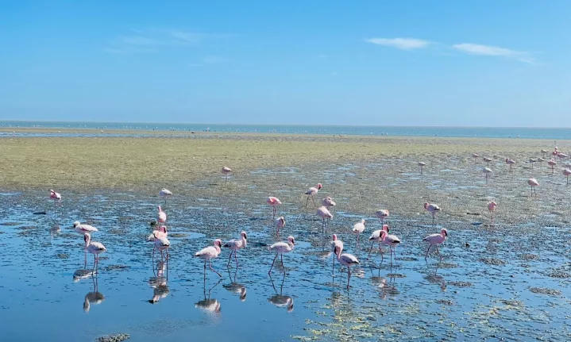

Zandvlei Estuary Nature Reserve
A 300‑hectare wetland on your doorstep — part of False Bay Ecology Park. More than 150 bird species, rare fynbos and a working estuary that cleans water and buffers floods. Picnic, walk the Muizenberg circular paths, or watch flamingos when water levels allow.
Address: Park Island / Coniston area, Marina da Gama
Web: zandvleitrust.org.za · City reserve enquiries 021 444 1489